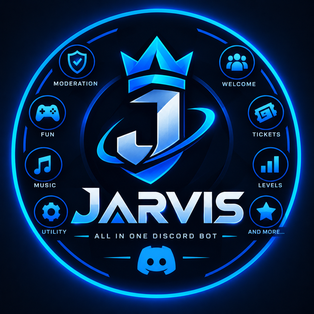
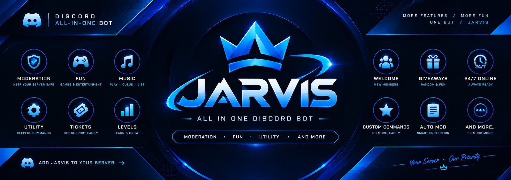

JARVIS
All-in-one
Discord bot
Moderation, antinuke, tickets, music, AI chat, levels, economy and giveaways. One bot for everything your server needs, with nothing locked behind a paywall.

One bot. Every feature.
Stop adding five different bots. JARVIS covers the whole server, and every feature is switchable per server.
Every feature, explained
Here is what you get, with a preview of how it looks in Discord.
Built to feel fast and clean
Buttons, dropdowns and pop-up forms instead of long commands to remember.
Slash commands and prefix
Every command works as /play and with a prefix like !play. Admins can change the prefix with /prefix.
Get started in 3 steps
Add the bot
Click Add to Discord, pick your server and approve the permissions.
Run the setup
Use /setup welcome, /setup logs and /ticket setup. Turn on /antinuke enable for protection.
Enjoy
Join a voice channel and /play something. Use /help any time.
Tip for antinuke: drag the JARVIS role to the top of your role list so it can act on anyone below it.
Make JARVIS look like yours
Want the bot to match your community? We can give JARVIS its own name, profile picture, banner and bio in your server. Other servers are not affected.
Custom bot profile
Your server name for the bot, your own picture and banner, and a bio. It is set up for you by the bot owner and can be changed or removed any time. This is a paid extra for servers that want it. Every feature of the bot stays free for everyone.
To get it, join the support server and open a ticket. We will tell you the price and what we need from you.
Ask in the support serverQuick answers
Is JARVIS free?
Yes. All features are free to use. The only paid extra is an optional custom profile (your own bot name, picture, banner and bio in your server). Ask in the support server.
Which permissions does it need?
The invite asks for Administrator so every feature works out of the box. You can lower it, but antinuke, tickets, roles and music need Manage Channels, Manage Roles, Ban Members, View Audit Log, Connect and Speak.
Where can it play music from?
SoundCloud, Spotify songs, albums and playlists, and direct audio links. It can stay in a voice channel 24/7 with /247 enable.
How does antinuke work?
If someone deletes or creates too many channels or roles, bans or kicks too many people, or creates webhooks too fast, JARVIS punishes them in seconds (ban, kick or strip roles) and alerts the owner. You can whitelist people you trust.
What data do you store?
Only what features need, like settings, levels and tickets. See the privacy policy. Data is deleted when the bot leaves your server.
Something is not working. Who do I ask?
Join the support server (link in the footer) or email us from the privacy page.
